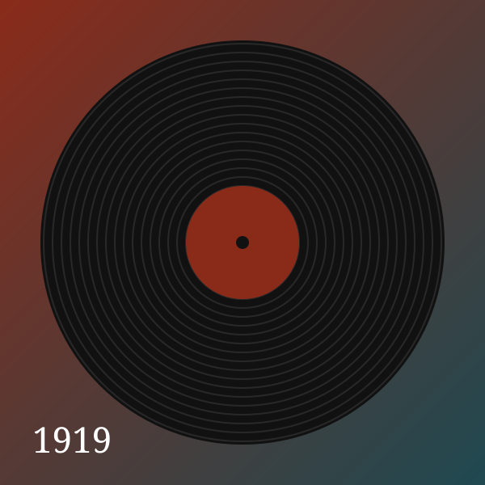

Sayyid Darwīsh, “Qum yā Miṣrī” (Odeon; 1919 work, specific disc date unknown)

Background: The work is a strong collective defiance / anticolonial solidarity lead. It is not simply a generic patriotic song: it emerged in the 1919 uprising and uses an imperative call to collective action. The solidarity stanza is particularly important because it can be read as an explicit appeal across religious communities; verify its presence in the actual Odeon issue rather than importing it from a later printed lyric.
Proposed role: Anticolonial defiance / collective grievance / solidarity